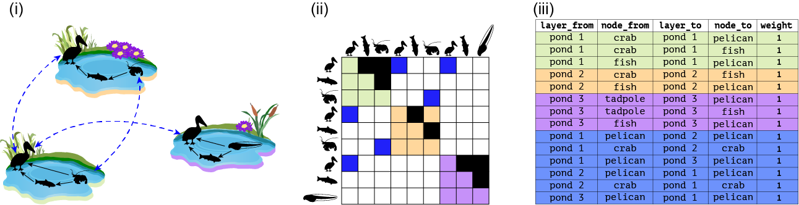
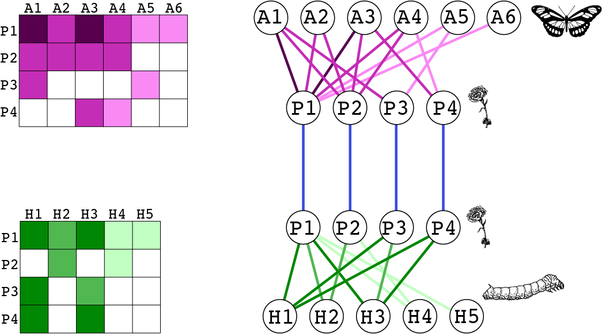
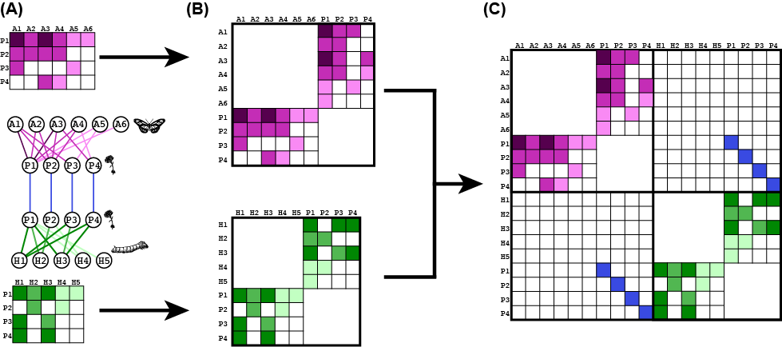
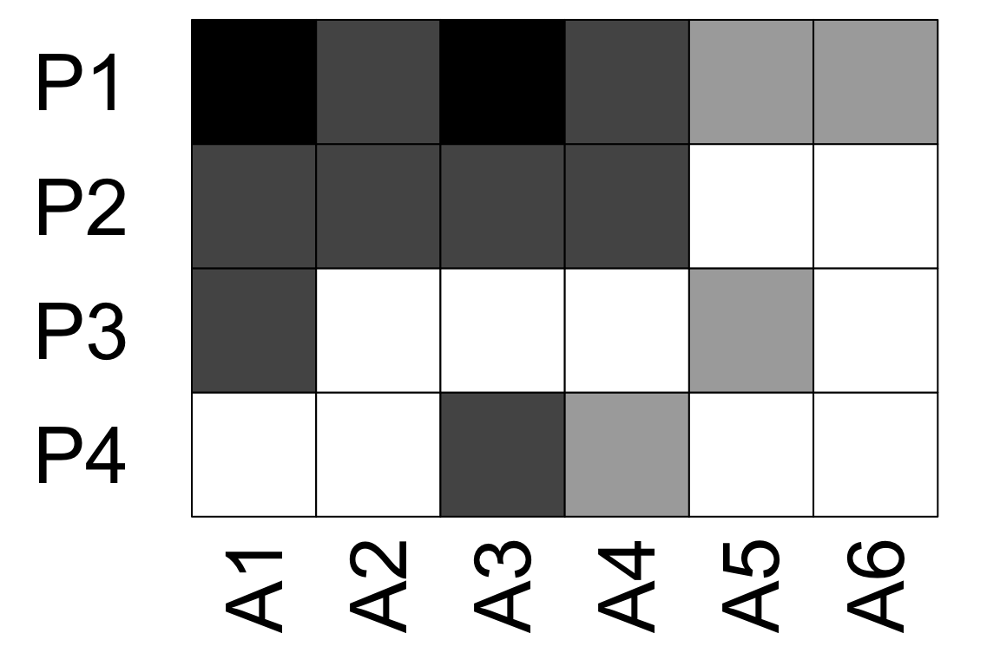
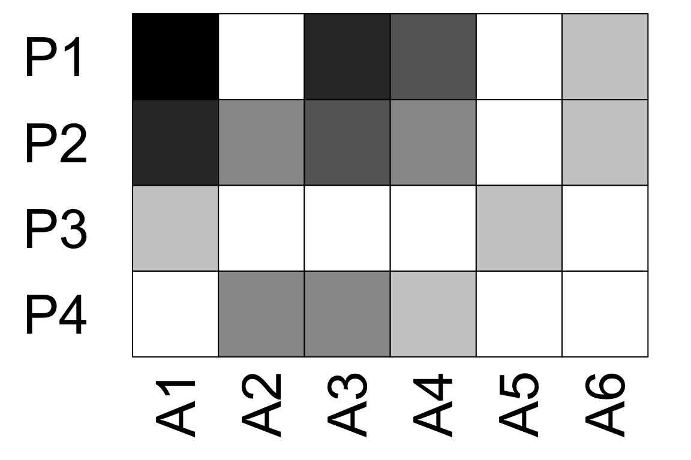
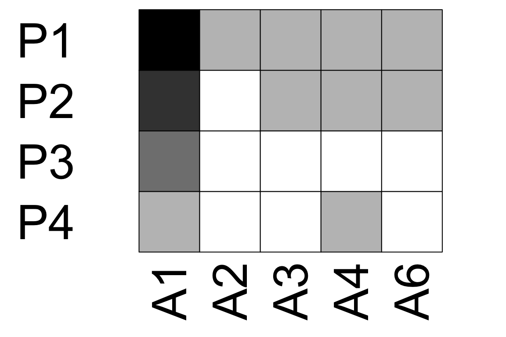

library(emln)
library(igraph)
library(tidyverse)
library(bipartite)
library(magrittr)We start with a toy example using Fig. 1A from the paper shown below.

pond_1 <- matrix(c(0,1,1,0,0,1,0,0,0), byrow = T, nrow = 3, ncol = 3, dimnames = list(c('pelican','fish','crab'),c('pelican','fish','crab')))
pond_2 <- matrix(c(0,1,0,0,0,1,0,0,0), byrow = T, nrow = 3, ncol = 3, dimnames = list(c('pelican','fish','crab'),c('pelican','fish','crab')))
pond_3 <- matrix(c(0,1,1,0,0,1,0,0,0), byrow = T, nrow = 3, ncol = 3, dimnames = list(c('pelican','fish','tadpole'),c('pelican','fish','tadpole')))
layer_attrib <- tibble(layer_id=1:3,
layer_name=c('pond_1','pond_2','pond_3'),
location=c('valley','mid-elevation','uphill'))
# Create the ELL tibble with interlayer links.
interlayer <- tibble(layer_from=c('pond_1','pond_1','pond_1'),
node_from=c('pelican','crab','pelican'),
layer_to=c('pond_2','pond_2','pond_3'),
node_to=c('pelican','crab','pelican'),
weight=1)
# This is a directed network so the links should go both ways, even though they are symmetric.
interlayer_2 <- interlayer[,c(3,4,1,2,5)]
names(interlayer_2) <- names(interlayer)
interlayer <- rbind(interlayer, interlayer_2)
# This example is commented out because it cannot run. It fails because we provide interlayer links, which include layer names, but not the layer attributes that contain the layer names
# multilayer <- create_multilayer_network(list_of_layers = list(pond_1, pond_2, pond_3),
# interlayer_links = interlayer,
# bipartite = F,
# directed = T)
# When layer attributes are not included they are auto-generated
multilayer <- create_multilayer_network(list_of_layers = list(pond_1, pond_2, pond_3),
bipartite = F,
directed = T)
multilayer$layers## # A tibble: 3 × 2
## layer_id layer_name
## <int> <chr>
## 1 1 layer_1
## 2 2 layer_2
## 3 3 layer_3# An example with layer attributes and interlayer links
multilayer_unip_toy <- create_multilayer_network(list_of_layers = list(pond_1, pond_2, pond_3),
interlayer_links = interlayer,
layer_attributes = layer_attrib,
bipartite = F,
directed = T)multilayer classThe resulting multilayer class includes the following
tables:
layer_from node_from layer_to node_to weight. All nodes and
layers are identified by names.layer_from node_from layer_to node_to weight. All nodes and
layers are identified by unique IDs automatically generated.layer_id node_id layer_name node_name. Also includes state
node attributes if provided as input.multilayer_unip_toy## $nodes
## # A tibble: 4 × 2
## node_id node_name
## <int> <chr>
## 1 1 crab
## 2 2 fish
## 3 3 pelican
## 4 4 tadpole
##
## $layers
## # A tibble: 3 × 3
## layer_id layer_name location
## <int> <chr> <chr>
## 1 1 pond_1 valley
## 2 2 pond_2 mid-elevation
## 3 3 pond_3 uphill
##
## $extended
## # A tibble: 14 × 5
## layer_from node_from layer_to node_to weight
## <chr> <chr> <chr> <chr> <dbl>
## 1 pond_1 fish pond_1 pelican 1
## 2 pond_1 crab pond_1 pelican 1
## 3 pond_1 crab pond_1 fish 1
## 4 pond_2 fish pond_2 pelican 1
## 5 pond_2 crab pond_2 fish 1
## 6 pond_3 fish pond_3 pelican 1
## 7 pond_3 tadpole pond_3 pelican 1
## 8 pond_3 tadpole pond_3 fish 1
## 9 pond_1 pelican pond_2 pelican 1
## 10 pond_1 crab pond_2 crab 1
## 11 pond_1 pelican pond_3 pelican 1
## 12 pond_2 pelican pond_1 pelican 1
## 13 pond_2 crab pond_1 crab 1
## 14 pond_3 pelican pond_1 pelican 1
##
## $extended_ids
## # A tibble: 14 × 5
## layer_from node_from layer_to node_to weight
## <int> <int> <int> <int> <dbl>
## 1 1 2 1 3 1
## 2 1 1 1 3 1
## 3 1 1 1 2 1
## 4 2 2 2 3 1
## 5 2 1 2 2 1
## 6 3 2 3 3 1
## 7 3 4 3 3 1
## 8 3 4 3 2 1
## 9 1 3 2 3 1
## 10 1 1 2 1 1
## 11 1 3 3 3 1
## 12 2 3 1 3 1
## 13 2 1 1 1 1
## 14 3 3 1 3 1
##
## $state_nodes
## # A tibble: 9 × 4
## layer_id node_id layer_name node_name
## <int> <int> <chr> <chr>
## 1 1 3 pond_1 pelican
## 2 1 2 pond_1 fish
## 3 1 1 pond_1 crab
## 4 2 3 pond_2 pelican
## 5 2 2 pond_2 fish
## 6 2 1 pond_2 crab
## 7 3 3 pond_3 pelican
## 8 3 2 pond_3 fish
## 9 3 4 pond_3 tadpole
##
## $description
## NULL
##
## $references
## NULL
##
## attr(,"class")
## [1] "multilayer"Now let’s try to provide attributes for state nodes. That is, a specific attribute of a physical node in a layer. For instance, the abundance of species can change between layers. When providing state nodes the names of the nodes and the layers must be the same as in the list of layers and in the layer attribute table.
We also include in this example attributes of intralayer links. This can be done when the input is a link list. When providing link attributes, the headers of all the layers’ link lists, and that of the interlayer links, must be the same, even if not all the attributes are provided in all layers. Here, we add a link attribute called method.
# Input will be link lists
pond_1_ll <- matrix_to_list_unipartite(pond_1, directed = T)$edge_list
pond_2_ll <- matrix_to_list_unipartite(pond_2, directed = T)$edge_list
pond_3_ll <- matrix_to_list_unipartite(pond_3, directed = T)$edge_list
# Add attributes to links
pond_1_ll$method <- c('observation', 'observation', 'gut analysis')
pond_2_ll$method <- c('observation', 'gut analysis')
pond_3_ll$method <- c('observation', 'observation', 'gut analysis')
# Check that the column names correspond after the weight column
identical(names(pond_1_ll)[4:length(pond_1_ll)], names(interlayer)[6:length(interlayer)])## [1] FALSE# The column names after the weight in the interlayer must be the same as in the layers' link lists
interlayer$method <- NA
identical(names(pond_1_ll)[4:length(pond_1_ll)], names(interlayer)[6:length(interlayer)])## [1] TRUE# Add state node attributes
pond_1_sn <- data.frame(node_name=c('fish','pelican','crab'),n=c(10,1,100))
pond_2_sn <- data.frame(node_name=c('fish','pelican','crab'),n=c(20,2,200))
pond_3_sn <- data.frame(node_name=c('fish','pelican','tadpole'),n=c(30,3,300))
abundance_sn <- bind_rows(pond_1_sn, pond_2_sn, pond_3_sn) %>%
mutate(layer_name=rep(c('pond_1','pond_2','pond_3'),each=3)) %>%
select(node_name, layer_name, n) # make sure node_name is the first column
# Add attributes of the physical nodes
physical_node_attrib <- data.frame(node_name=c('fish','pelican','crab','tadpole'),
order=c('Chondrichthyes','Pelecaniformes','Decapoda','Anura'))
multilayer_unip_attributes <- create_multilayer_network(list_of_layers = list(pond_1_ll, pond_2_ll, pond_3_ll),
interlayer_links = interlayer,
layer_attributes = layer_attrib,
state_node_attributes=abundance_sn %>% select(node_name, layer_name, ),
physical_node_attributes=physical_node_attrib,
bipartite = F,
directed = T)Note that the node, state_nodes and link tables now include the attributes.
multilayer_unip_attributes## $nodes
## # A tibble: 4 × 3
## node_id node_name order
## <int> <chr> <chr>
## 1 1 crab Decapoda
## 2 2 fish Chondrichthyes
## 3 3 pelican Pelecaniformes
## 4 4 tadpole Anura
##
## $layers
## # A tibble: 3 × 3
## layer_id layer_name location
## <int> <chr> <chr>
## 1 1 pond_1 valley
## 2 2 pond_2 mid-elevation
## 3 3 pond_3 uphill
##
## $extended
## # A tibble: 14 × 6
## layer_from node_from layer_to node_to weight method
## <chr> <chr> <chr> <chr> <dbl> <chr>
## 1 pond_1 fish pond_1 pelican 1 observation
## 2 pond_1 crab pond_1 pelican 1 observation
## 3 pond_1 crab pond_1 fish 1 gut analysis
## 4 pond_2 fish pond_2 pelican 1 observation
## 5 pond_2 crab pond_2 fish 1 gut analysis
## 6 pond_3 fish pond_3 pelican 1 observation
## 7 pond_3 tadpole pond_3 pelican 1 observation
## 8 pond_3 tadpole pond_3 fish 1 gut analysis
## 9 pond_1 pelican pond_2 pelican 1 <NA>
## 10 pond_1 crab pond_2 crab 1 <NA>
## 11 pond_1 pelican pond_3 pelican 1 <NA>
## 12 pond_2 pelican pond_1 pelican 1 <NA>
## 13 pond_2 crab pond_1 crab 1 <NA>
## 14 pond_3 pelican pond_1 pelican 1 <NA>
##
## $extended_ids
## # A tibble: 14 × 6
## layer_from node_from layer_to node_to weight method
## <int> <int> <int> <int> <dbl> <chr>
## 1 1 2 1 3 1 observation
## 2 1 1 1 3 1 observation
## 3 1 1 1 2 1 gut analysis
## 4 2 2 2 3 1 observation
## 5 2 1 2 2 1 gut analysis
## 6 3 2 3 3 1 observation
## 7 3 4 3 3 1 observation
## 8 3 4 3 2 1 gut analysis
## 9 1 3 2 3 1 <NA>
## 10 1 1 2 1 1 <NA>
## 11 1 3 3 3 1 <NA>
## 12 2 3 1 3 1 <NA>
## 13 2 1 1 1 1 <NA>
## 14 3 3 1 3 1 <NA>
##
## $state_nodes
## # A tibble: 9 × 4
## layer_id node_id layer_name node_name
## <int> <int> <chr> <chr>
## 1 1 2 pond_1 fish
## 2 1 3 pond_1 pelican
## 3 1 1 pond_1 crab
## 4 2 2 pond_2 fish
## 5 2 3 pond_2 pelican
## 6 2 1 pond_2 crab
## 7 3 2 pond_3 fish
## 8 3 3 pond_3 pelican
## 9 3 4 pond_3 tadpole
##
## $description
## NULL
##
## $references
## NULL
##
## attr(,"class")
## [1] "multilayer"This is a node-aligned multiplex network with three layers: trophic interactions, non-trophic positive interactions and non-trophic negative interactions.
First, we will see how we can use matrices as input. Along the way we perform sanity checks such as making sure the number and identity of of species is the same in the 3 layers.
# Load and organize the trophic interactions matrix
chilean_TI <- read_delim('chilean_TI.txt', delim = '\t')
nodes <- chilean_TI[,2]
names(nodes) <- 'Species'
chilean_TI <- data.matrix(chilean_TI[,3:ncol(chilean_TI)])
dim(chilean_TI)## [1] 106 106dimnames(chilean_TI) <- list(nodes$Species,nodes$Species)
# Load and organize the negative non-trophic interactions matrix
chilean_NTIneg <- read_delim('chilean_NTIneg.txt', delim = '\t')
nodes <- chilean_NTIneg[,2]
names(nodes) <- 'Species'
chilean_NTIneg <- data.matrix(chilean_NTIneg[,3:ncol(chilean_NTIneg)])
dim(chilean_NTIneg)## [1] 106 106dimnames(chilean_NTIneg) <- list(nodes$Species,nodes$Species)
# Are all row and column names the same?
setequal(rownames(chilean_TI), rownames(chilean_NTIneg))## [1] TRUEsetequal(colnames(chilean_TI), colnames(chilean_NTIneg))## [1] TRUEchilean_NTIneg <- chilean_NTIneg[rownames(chilean_TI),colnames(chilean_TI)]
all(rownames(chilean_TI)==rownames(chilean_NTIneg))## [1] TRUE# Load and organize the negative non-trophic positive matrix
chilean_NTIpos <- read_delim('chilean_NTIpos.txt', delim = '\t')
nodes <- chilean_NTIpos[,2]
names(nodes) <- 'Species'
chilean_NTIpos <- data.matrix(chilean_NTIpos[,3:ncol(chilean_NTIpos)])
dim(chilean_NTIpos)## [1] 106 106dimnames(chilean_NTIpos) <- list(nodes$Species,nodes$Species)
# Are all row and column names the same?
setequal(rownames(chilean_TI), rownames(chilean_NTIpos))## [1] TRUEsetequal(colnames(chilean_TI), colnames(chilean_NTIpos))## [1] TRUEchilean_NTIpos <- chilean_NTIpos[rownames(chilean_TI),colnames(chilean_TI)]
all(rownames(chilean_TI)==rownames(chilean_NTIpos))## [1] TRUE# Total number of links
sum(chilean_TI, chilean_NTIpos, chilean_NTIneg)## [1] 4623layer_attributes <- tibble(layer_id=1:3, layer_name=c('TI','NTIneg','NTIpos'))
multilayer_kefi <- create_multilayer_network(list_of_layers = list(chilean_TI,chilean_NTIneg,chilean_NTIpos),
interlayer_links = NULL,
layer_attributes = layer_attributes,
bipartite = F,
directed = T)Now, we can try and use link lists as input. We will convert the matrices to link lists first.
# This is for the Kefi data set
chilean_TI_ll <- matrix_to_list_unipartite(x = chilean_TI, directed = TRUE)$edge_list
chilean_NTIneg_ll <- matrix_to_list_unipartite(x = chilean_NTIneg, directed = TRUE)$edge_list
chilean_NTIpos_ll <- matrix_to_list_unipartite(x = chilean_NTIpos, directed = TRUE)$edge_list
multilayer_kefi_ll <- create_multilayer_network(list_of_layers = list(chilean_TI_ll,chilean_NTIneg_ll,chilean_NTIpos_ll), layer_attributes = layer_attributes, bipartite = F, directed = T)
# Check that the set of links is the same in both
links_mat <- multilayer_kefi$extended_ids %>% unite(layer_from, node_from, layer_to, node_to)
links_ll <- multilayer_kefi_ll$extended_ids %>% unite(layer_from, node_from, layer_to, node_to)
any(duplicated(links_mat$layer_from))## [1] FALSEany(duplicated(links_ll$layer_from))## [1] FALSEsetequal(links_mat$layer_from, links_ll$layer_from)## [1] TRUEWe will work with the toy example from Fig. 3 in the paper.

pollination_layer <- matrix(c(5,3,5,3,1,1,
3,3,3,3,0,0,
3,0,0,0,1,0,
0,0,3,1,0,0), byrow = T, nrow = 4, ncol = 6,
dimnames = list(paste('P',1:4,sep=''),paste('A',1:6,sep='')))
herbivory_layer <- matrix(c(6,4,6,2,2,
0,4,0,2,0,
6,0,4,0,0,
6,0,6,0,0), byrow = T, nrow = 4, ncol = 5,
dimnames = list(paste('P',1:4,sep=''),paste('H',1:5,sep='')))
layer_attrib <- tibble(layer_id=1:2,
layer_name=c('Pollination','Herbivory'),
Method=c('Observation','Collection'))
# Create the ELL tibble with interlayer links.
interlayer <- tibble(layer_from=c('Pollination','Pollination','Pollination','Pollination'),
node_from=c('P1','P2','P3','P4'),
layer_to=c('Herbivory','Herbivory','Herbivory','Herbivory'),
node_to=c('P1','P2','P3','P4'),
weight=1)
multilayer_bip_toy <- create_multilayer_network(list_of_layers = list(pollination_layer, herbivory_layer), bipartite = T, directed = F, interlayer_links = interlayer, layer_attributes = layer_attrib)
# Now add information on state nodes for pollinators
abundance_sn <- data.frame(layer_name=c('Pollination','Pollination','Pollination'), node_name=c('A1','A2','A3','A4','A5','A6'), abund=c(15,20,7,8,12,3))
multilayer <- create_multilayer_network(list_of_layers = list(pollination_layer, herbivory_layer), bipartite = T, directed = F, interlayer_links = interlayer, layer_attributes = layer_attrib, state_node_attributes = abundance_sn)We will work with data from the paper Hot spots of mutualistic networks (Gilarranz et al 2014. J Anim Ecol). The data contains 12 layers (patches) of plant-pollinator interactions. We use the original data, provided in Excel to show how working with real data feels like. This illustrates the workflow discussed in the paper.
library(readxl)
# Import layers
Sierras_matrices <- NULL
for (layer in 1:12){
d <- suppressMessages(read_excel('Gilarranz2014_Datos_Sierras.xlsx', sheet = layer+2))
web <- data.matrix(d[,2:ncol(d)])
rownames(web) <- as.data.frame(d)[,1]
web[is.na(web)] <- 0
Sierras_matrices[[layer]] <- web
}
# Layer dimensions
sapply(Sierras_matrices, dim)## [,1] [,2] [,3] [,4] [,5] [,6] [,7] [,8] [,9] [,10] [,11] [,12]
## [1,] 39 36 33 38 25 17 24 33 28 22 34 34
## [2,] 67 58 63 79 69 67 58 61 48 66 74 68# Layer attribute table
layer_attrib <- tibble(layer_id=1:12,
layer_name=excel_sheets('Gilarranz2014_Datos_Sierras.xlsx')[3:14])
multilayer_sierras <- create_multilayer_network(list_of_layers = Sierras_matrices, bipartite = T, directed = F, layer_attributes = layer_attrib)To illustrate working with interlayer links, we will connect a pollinator to itself between layers, and weigh these links by the distance between the layers. We emphasize that this is for illustration purposes only; there is no hypothesis behind this exercise. We already calculated the distances between the 12 patches.
dist <- data.matrix(read_csv('Gilarranz2014_distances.csv'))
dimnames(dist) <- list(layer_attrib$layer_name, layer_attrib$layer_name)
# Get the dispersal matrix, for pollinators only. This matrix shows which pollinator is in which layer
dispersal <- multilayer_sierras$extended %>% group_by(node_from) %>% dplyr::select(layer_from) %>% table()
dispersal <- 1*(dispersal>0)
Sierras_interlayer <- NULL
for (s in rownames(dispersal)){ # For each pollinator
x <- dispersal[s,]
locations <- names(which(x!=0)) # locations where pollinator occurs
if (length(locations)<2){next}
pairwise <- combn(locations, 2)
# Create interlayer edges between pairwise combinations of locations
for (i in 1:ncol(pairwise)){
a <- pairwise[1,i]
b <- pairwise[2,i]
weight <- dist[a,b] # Get the interlayer edge weight
Sierras_interlayer %<>% bind_rows(tibble(layer_from=a, node_from=s, layer_to=b, node_to=s, weight=weight))
}
}
# Re-create the multilayer object with interlayer links
multilayer_sierras_interlayer <- create_multilayer_network(list_of_layers = Sierras_matrices, bipartite = T, directed = F, layer_attributes = layer_attrib, interlayer_links = Sierras_interlayer)
# See the interlayer links
multilayer_sierras_interlayer$extended %>% filter(layer_from!=layer_to)## # A tibble: 2,657 × 5
## layer_from node_from layer_to node_to weight
## <chr> <chr> <chr> <chr> <dbl>
## 1 La Brava Achyra similalis Vigilancia Achyra similalis 0.0652
## 2 Amarante Agraulis vanillae Barrosa Agraulis vanillae 0.166
## 3 Amarante Agraulis vanillae Difuntito Agraulis vanillae 0.183
## 4 Amarante Agraulis vanillae Difuntos Agraulis vanillae 0.871
## 5 Amarante Agraulis vanillae La Brava Agraulis vanillae 0.617
## 6 Amarante Agraulis vanillae Vigilancia Agraulis vanillae 0.552
## 7 Barrosa Agraulis vanillae Difuntito Agraulis vanillae 0.0173
## 8 Barrosa Agraulis vanillae Difuntos Agraulis vanillae 0.705
## 9 Barrosa Agraulis vanillae La Brava Agraulis vanillae 0.452
## 10 Barrosa Agraulis vanillae Vigilancia Agraulis vanillae 0.387
## # ℹ 2,647 more rowsmultilayer_sierras_interlayer$extended_ids %>% filter(layer_from!=layer_to)## # A tibble: 2,657 × 5
## layer_from node_from layer_to node_to weight
## <int> <int> <int> <int> <dbl>
## 1 7 2 11 2 0.0652
## 2 1 6 2 6 0.166
## 3 1 6 4 6 0.183
## 4 1 6 5 6 0.871
## 5 1 6 7 6 0.617
## 6 1 6 11 6 0.552
## 7 2 6 4 6 0.0173
## 8 2 6 5 6 0.705
## 9 2 6 7 6 0.452
## 10 2 6 11 6 0.387
## # ℹ 2,647 more rowsA SAM is convenient for matrix operations. See a visual
guide on the idea of tensor flattening and producing SAM. Use the
function get_sam to obtain a SAM. See ?get_sam
for an explanation on what the function returns.
Let’s take take the toy unipartite network first. This is a directed network.
# Order the physical nodes as in the image for convenience
multilayer_unip_toy$nodes <- multilayer_unip_toy$nodes[c(3,2,1,4),]
# get the SAM
sam_unipartite <- get_sam(multilayer = multilayer_unip_toy, bipartite = F, directed = T, sparse = F, remove_zero_rows_cols = F)The SAM contains 3 layers by 4 physical nodes = 12 state nodes.
sam_unipartite$M## 1 2 3 4 5 6 7 8 9 10 11 12
## 1 0 1 1 0 1 0 0 0 1 0 0 0
## 2 0 0 1 0 0 0 0 0 0 0 0 0
## 3 0 0 0 0 0 0 1 0 0 0 0 0
## 4 0 0 0 0 0 0 0 0 0 0 0 0
## 5 1 0 0 0 0 1 0 0 0 0 0 0
## 6 0 0 0 0 0 0 1 0 0 0 0 0
## 7 0 0 1 0 0 0 0 0 0 0 0 0
## 8 0 0 0 0 0 0 0 0 0 0 0 0
## 9 1 0 0 0 0 0 0 0 0 1 0 1
## 10 0 0 0 0 0 0 0 0 0 0 0 1
## 11 0 0 0 0 0 0 0 0 0 0 0 0
## 12 0 0 0 0 0 0 0 0 0 0 0 0The row and column names correspond to the sn_id
column in sam_unipartite$state_nodes_map. However,
not all nodes always occur in all layers. This will be reflected in the
state_nodes_map: When layer and node ids are NA that means
that the node did not occur in the layer.
sam_unipartite$state_nodes_map## sn_id layer_name node_name layer_id node_id tuple
## 1 1 pond_1 pelican 1 3 pond_1_pelican
## 2 2 pond_1 fish 1 2 pond_1_fish
## 3 3 pond_1 crab 1 1 pond_1_crab
## 4 4 pond_1 tadpole NA NA pond_1_tadpole
## 5 5 pond_2 pelican 2 3 pond_2_pelican
## 6 6 pond_2 fish 2 2 pond_2_fish
## 7 7 pond_2 crab 2 1 pond_2_crab
## 8 8 pond_2 tadpole NA NA pond_2_tadpole
## 9 9 pond_3 pelican 3 3 pond_3_pelican
## 10 10 pond_3 fish 3 2 pond_3_fish
## 11 11 pond_3 crab NA NA pond_3_crab
## 12 12 pond_3 tadpole 3 4 pond_3_tadpoleA node may not have links across all the layers. In that case, its row or column sum will be zero. This can happen in a directed network like this one; for example, the tadpole does not have incoming links. The user can choose to remove rows and columns that sum to zero by setting `remove_zero_rows_cols to TRUE.
sam_unipartite <- get_sam(multilayer = multilayer_unip_toy, bipartite = F, directed = T, sparse = F, remove_zero_rows_cols = T)
# That matrix has less than 12 rows/columns
dim(sam_unipartite$M)## [1] 8 9sam_unipartite$M## 1 2 3 5 6 7 9 10 12
## 1 0 1 1 1 0 0 1 0 0
## 2 0 0 1 0 0 0 0 0 0
## 3 0 0 0 0 0 1 0 0 0
## 5 1 0 0 0 1 0 0 0 0
## 6 0 0 0 0 0 1 0 0 0
## 7 0 0 1 0 0 0 0 0 0
## 9 1 0 0 0 0 0 0 1 1
## 10 0 0 0 0 0 0 0 0 1When matrices are very large and sparse, excess of zeroes takes a lot of memory. It is possible to use a sparse matrix.
sam_unipartite <- get_sam(multilayer = multilayer_unip_toy, bipartite = F, directed = T, sparse = T, remove_zero_rows_cols = T)
sam_unipartite$M## 8 x 9 sparse Matrix of class "dgCMatrix"
## 1 2 3 5 6 7 9 10 12
## 1 . 1 1 1 . . 1 . .
## 2 . . 1 . . . . . .
## 3 . . . . . 1 . . .
## 5 1 . . . 1 . . . .
## 6 . . . . . 1 . . .
## 7 . . 1 . . . . . .
## 9 1 . . . . . . 1 1
## 10 . . . . . . . . 1Bipartite networks are rectangular matrices. Therefore, it is necessary first to transform the incidence matrix to a square adjacency matrix. A visual example is in the figure below, in panels A–>B. Each layer is independently transformed. Then the layers are put together to a SAM as for unipartite network (panel C).

Now that the network is effectively a unipartite network, we proceed as with the previous example (e.g., state nodes and rows/columns that sum to zero).
We will start with the example in this figure. We already created
this network. Note the bipartite and directed
arguments.
# get the SAM
sam_bipartite <- get_sam(multilayer = multilayer_bip_toy, bipartite = T, directed = F, sparse = F, remove_zero_rows_cols = F)Because this is a diagnoally-copouled network and only plants are common between layers, there will be many NAs in the state node table.
sam_bipartite$state_nodes_map## sn_id layer_name node_name layer_id node_id tuple
## 1 1 Pollination A1 1 1 Pollination_A1
## 2 2 Pollination A2 1 2 Pollination_A2
## 3 3 Pollination A3 1 3 Pollination_A3
## 4 4 Pollination A4 1 4 Pollination_A4
## 5 5 Pollination A5 1 5 Pollination_A5
## 6 6 Pollination A6 1 6 Pollination_A6
## 7 7 Pollination H1 NA NA Pollination_H1
## 8 8 Pollination H2 NA NA Pollination_H2
## 9 9 Pollination H3 NA NA Pollination_H3
## 10 10 Pollination H4 NA NA Pollination_H4
## 11 11 Pollination H5 NA NA Pollination_H5
## 12 12 Pollination P1 1 12 Pollination_P1
## 13 13 Pollination P2 1 13 Pollination_P2
## 14 14 Pollination P3 1 14 Pollination_P3
## 15 15 Pollination P4 1 15 Pollination_P4
## 16 16 Herbivory A1 NA NA Herbivory_A1
## 17 17 Herbivory A2 NA NA Herbivory_A2
## 18 18 Herbivory A3 NA NA Herbivory_A3
## 19 19 Herbivory A4 NA NA Herbivory_A4
## 20 20 Herbivory A5 NA NA Herbivory_A5
## 21 21 Herbivory A6 NA NA Herbivory_A6
## 22 22 Herbivory H1 2 7 Herbivory_H1
## 23 23 Herbivory H2 2 8 Herbivory_H2
## 24 24 Herbivory H3 2 9 Herbivory_H3
## 25 25 Herbivory H4 2 10 Herbivory_H4
## 26 26 Herbivory H5 2 11 Herbivory_H5
## 27 27 Herbivory P1 2 12 Herbivory_P1
## 28 28 Herbivory P2 2 13 Herbivory_P2
## 29 29 Herbivory P3 2 14 Herbivory_P3
## 30 30 Herbivory P4 2 15 Herbivory_P4Also possible to remove zero rows/cols and get a sparse matrix
sam_bipartite <- get_sam(multilayer = multilayer_bip_toy, bipartite = T, directed = F, sparse = F, remove_zero_rows_cols = T)
# That matrix has less than 12 rows/columns
dim(sam_bipartite$M)## [1] 19 19sam_bipartite$M## 1 2 3 4 5 6 12 13 14 15 22 23 24 25 26 27 28 29 30
## 1 0 0 0 0 0 0 5 3 3 0 0 0 0 0 0 0 0 0 0
## 2 0 0 0 0 0 0 3 3 0 0 0 0 0 0 0 0 0 0 0
## 3 0 0 0 0 0 0 5 3 0 3 0 0 0 0 0 0 0 0 0
## 4 0 0 0 0 0 0 3 3 0 1 0 0 0 0 0 0 0 0 0
## 5 0 0 0 0 0 0 1 0 1 0 0 0 0 0 0 0 0 0 0
## 6 0 0 0 0 0 0 1 0 0 0 0 0 0 0 0 0 0 0 0
## 12 5 3 5 3 1 1 0 0 0 0 0 0 0 0 0 1 0 0 0
## 13 3 3 3 3 0 0 0 0 0 0 0 0 0 0 0 0 1 0 0
## 14 3 0 0 0 1 0 0 0 0 0 0 0 0 0 0 0 0 1 0
## 15 0 0 3 1 0 0 0 0 0 0 0 0 0 0 0 0 0 0 1
## 22 0 0 0 0 0 0 0 0 0 0 0 0 0 0 0 6 0 6 6
## 23 0 0 0 0 0 0 0 0 0 0 0 0 0 0 0 4 4 0 0
## 24 0 0 0 0 0 0 0 0 0 0 0 0 0 0 0 6 0 4 6
## 25 0 0 0 0 0 0 0 0 0 0 0 0 0 0 0 2 2 0 0
## 26 0 0 0 0 0 0 0 0 0 0 0 0 0 0 0 2 0 0 0
## 27 0 0 0 0 0 0 1 0 0 0 6 4 6 2 2 0 0 0 0
## 28 0 0 0 0 0 0 0 1 0 0 0 4 0 2 0 0 0 0 0
## 29 0 0 0 0 0 0 0 0 1 0 6 0 4 0 0 0 0 0 0
## 30 0 0 0 0 0 0 0 0 0 1 6 0 6 0 0 0 0 0 0# Sparse
sam_bipartite <- get_sam(multilayer = multilayer_bip_toy, bipartite = T, directed = F, sparse = T, remove_zero_rows_cols = T)
sam_bipartite$M## 19 x 19 sparse Matrix of class "dsCMatrix"##
## 1 . . . . . . 5 3 3 . . . . . . . . . .
## 2 . . . . . . 3 3 . . . . . . . . . . .
## 3 . . . . . . 5 3 . 3 . . . . . . . . .
## 4 . . . . . . 3 3 . 1 . . . . . . . . .
## 5 . . . . . . 1 . 1 . . . . . . . . . .
## 6 . . . . . . 1 . . . . . . . . . . . .
## 12 5 3 5 3 1 1 . . . . . . . . . 1 . . .
## 13 3 3 3 3 . . . . . . . . . . . . 1 . .
## 14 3 . . . 1 . . . . . . . . . . . . 1 .
## 15 . . 3 1 . . . . . . . . . . . . . . 1
## 22 . . . . . . . . . . . . . . . 6 . 6 6
## 23 . . . . . . . . . . . . . . . 4 4 . .
## 24 . . . . . . . . . . . . . . . 6 . 4 6
## 25 . . . . . . . . . . . . . . . 2 2 . .
## 26 . . . . . . . . . . . . . . . 2 . . .
## 27 . . . . . . 1 . . . 6 4 6 2 2 . . . .
## 28 . . . . . . . 1 . . . 4 . 2 . . . . .
## 29 . . . . . . . . 1 . 6 . 4 . . . . . .
## 30 . . . . . . . . . 1 6 . 6 . . . . . .Note that in this undirected network, each layer and the final SAM are symmetric.
Matrix::isSymmetric(sam_bipartite$M) # Does not work on sparse matrices## [1] TRUEThe past example was a Now let’s try an example with a directed, temporal bipartite network. We will use the pollination layer from the previous example to start with, and we will work with the same pollinators and plants.
time_1 <- matrix(c(5,3,5,3,1,1,
3,3,3,3,0,0,
3,0,0,0,1,0,
0,0,3,1,0,0), byrow = T, nrow = 4, ncol = 6,
dimnames = list(paste('P',1:4,sep=''),paste('A',1:6,sep='')))
time_2 <- matrix(c(7,0,5,3,0,1,
5,2,3,2,0,1,
1,0,0,0,1,0,
0,2,2,1,0,0), byrow = T, nrow = 4, ncol = 6,
dimnames = list(paste('P',1:4,sep=''),paste('A',1:6,sep='')))
time_3 <- matrix(c(5,1,1,1,0,1,
3,0,1,1,0,1,
2,0,0,0,0,0,
1,0,0,1,0,0), byrow = T, nrow = 4, ncol = 6,
dimnames = list(paste('P',1:4,sep=''),paste('A',1:6,sep='')))
# Plot the layers
visweb(time_1, type = 'none')
visweb(time_2, type = 'none')
visweb(time_3, type = 'none') # A5 has no links here
layer_attrib <- tibble(layer_id=1:3, layer_name=c('Time_1','Time_2', 'Time_3'))
# Create the ELL tibble with interlayer links.
# We will link a some plant species for the example. The value is 100 so they will be easy to spot
interlayer <- tibble(layer_from=c('Time_1', 'Time_2', 'Time_2', 'Time_2'),
node_from= c('P1', 'P1', 'P2', 'P4'),
layer_to= c('Time_2', 'Time_3', 'Time_3', 'Time_3'),
node_to= c('P1', 'P1', 'P2', 'P4'),
weight=c(100,100,100,100))
multilayer_bip_temporal <- create_multilayer_network(list_of_layers = list(time_1, time_2,time_3), bipartite = T, directed = F, interlayer_links = interlayer, layer_attributes = layer_attrib)Now get the SAM. Notice that interlayer links are only on one matrix diagonal off-blocks.
temporal_SAM <- get_sam(multilayer_bip_temporal, bipartite = T, directed = T, sparse = T)
temporal_SAM$M## 30 x 30 sparse Matrix of class "dgCMatrix"##
## 1 . . . . . . 5 3 3 . . . . . . . . . . . . . . . . . . . . .
## 2 . . . . . . 3 3 . . . . . . . . . . . . . . . . . . . . . .
## 3 . . . . . . 5 3 . 3 . . . . . . . . . . . . . . . . . . . .
## 4 . . . . . . 3 3 . 1 . . . . . . . . . . . . . . . . . . . .
## 5 . . . . . . 1 . 1 . . . . . . . . . . . . . . . . . . . . .
## 6 . . . . . . 1 . . . . . . . . . . . . . . . . . . . . . . .
## 7 5 3 5 3 1 1 . . . . . . . . . . . . . . . . . . . . . . . .
## 8 3 3 3 3 . . . . . . . . . . . . . . . . . . . . . . . . . .
## 9 3 . . . 1 . . . . . . . . . . . . . . . . . . . . . . . . .
## 10 . . 3 1 . . . . . . . . . . . . . . . . . . . . . . . . . .
## 11 . . . . . . . . . . . . . . . . 7 5 1 . . . . . . . . . . .
## 12 . . . . . . . . . . . . . . . . . 2 . 2 . . . . . . . . . .
## 13 . . . . . . . . . . . . . . . . 5 3 . 2 . . . . . . . . . .
## 14 . . . . . . . . . . . . . . . . 3 2 . 1 . . . . . . . . . .
## 15 . . . . . . . . . . . . . . . . . . 1 . . . . . . . . . . .
## 16 . . . . . . . . . . . . . . . . 1 1 . . . . . . . . . . . .
## 17 . . . . . . 100 . . . 7 . 5 3 . 1 . . . . . . . . . . . . . .
## 18 . . . . . . . . . . 5 2 3 2 . 1 . . . . . . . . . . . . . .
## 19 . . . . . . . . . . 1 . . . 1 . . . . . . . . . . . . . . .
## 20 . . . . . . . . . . . 2 2 1 . . . . . . . . . . . . . . . .
## 21 . . . . . . . . . . . . . . . . . . . . . . . . . . 5 3 2 1
## 22 . . . . . . . . . . . . . . . . . . . . . . . . . . 1 . . .
## 23 . . . . . . . . . . . . . . . . . . . . . . . . . . 1 1 . .
## 24 . . . . . . . . . . . . . . . . . . . . . . . . . . 1 1 . 1
## 25 . . . . . . . . . . . . . . . . . . . . . . . . . . . . . .
## 26 . . . . . . . . . . . . . . . . . . . . . . . . . . 1 1 . .
## 27 . . . . . . . . . . . . . . . . 100 . . . 5 1 1 1 . 1 . . . .
## 28 . . . . . . . . . . . . . . . . . 100 . . 3 . 1 1 . 1 . . . .
## 29 . . . . . . . . . . . . . . . . . . . . 2 . . . . . . . . .
## 30 . . . . . . . . . . . . . . . . . . . 100 1 . . 1 . . . . . .Matrix::isSymmetric(temporal_SAM$M) # Should be FALSE## [1] FALSEThis example shows that the function can handle large networks. This is the spatial network we used before.
# Without interlayer links
sierras_SAM <- get_sam(multilayer = multilayer_sierras, bipartite = T, directed = F, sparse = T, remove_zero_rows_cols = F)
sum(sierras_SAM$M)==2*nrow(multilayer_sierras$extended) # Number of interactions in the SAM should be links the number of links because we created the square matrices## [1] TRUE# With interlayer links
sierras_SAM_interlayer <- get_sam(multilayer = multilayer_sierras_interlayer, bipartite = T, directed = F, sparse = T, remove_zero_rows_cols = F)
# Look at a subset of the data
sierras_SAM_interlayer$M[1:20,1:20]## 20 x 20 sparse Matrix of class "dsCMatrix"##
## 1 . . . . . . . . . . . . . . . . . . . .
## 2 . . . . . . . . . . . . . . . . . . . .
## 3 . . . . . . . . . . 1 . 1 . . . . . 1 .
## 4 . . . . . . . . . . . . . . . . . . . .
## 5 . . . . . . . . . . . . . . . . . . . .
## 6 . . . . . . . . . . . . . . . . . . . .
## 7 . . . . . . . . . . . . . . . . . . . .
## 8 . . . . . . . . . . . . . . . . . . . .
## 9 . . . . . . . . . . . . . . . . . 1 . .
## 10 . . . . . . . . . . . . . . . . . . . .
## 11 . . 1 . . . . . . . . . . . . . . . . .
## 12 . . . . . . . . . . . . . . . . . . . .
## 13 . . 1 . . . . . . . . . . . . . . . . .
## 14 . . . . . . . . . . . . . . . . . . . .
## 15 . . . . . . . . . . . . . . . . . . . .
## 16 . . . . . . . . . . . . . . . . . . . .
## 17 . . . . . . . . . . . . . . . . . . . .
## 18 . . . . . . . . 1 . . . . . . . . . . .
## 19 . . 1 . . . . . . . . . . . . . . . . .
## 20 . . . . . . . . . . . . . . . . . . . .igraph is used frequently for analysis. Hence, it is convenient to
obtain a list of igraph objects as layers. This can be done with the
get_igraph function. The attributes of the links, state
nodes and the physical nodes are all included in the igraph objects. We
will show this using the ponds example with atteibutes we used before.
The sn_id corresponds to that in the
state_nodes_map.
g_layers <- get_igraph(multilayer_unip_attributes, bipartite = F, directed = T)Let’s look at one layer as an example.
g_layers$layers_igraph[[2]]## IGRAPH ff1da96 DNW- 3 2 --
## + attr: name (v/c), layer_id (v/n), node_id (v/n), weight (e/n), method (e/c)
## + edges from ff1da96 (vertex names):
## [1] fish->pelican crab->fishThe state nodes are listed below. Note that they include the attributes of the physical nodes (order in this example), and that all attributes are included in the igraph objects.
g_layers$state_nodes_map## sn_id layer_name node_name layer_id node_id tuple order
## 1 1 pond_1 crab 1 1 pond_1_crab Decapoda
## 2 2 pond_1 fish 1 2 pond_1_fish Chondrichthyes
## 3 3 pond_1 pelican 1 3 pond_1_pelican Pelecaniformes
## 4 4 pond_1 tadpole NA NA pond_1_tadpole <NA>
## 5 5 pond_2 crab 2 1 pond_2_crab Decapoda
## 6 6 pond_2 fish 2 2 pond_2_fish Chondrichthyes
## 7 7 pond_2 pelican 2 3 pond_2_pelican Pelecaniformes
## 8 8 pond_2 tadpole NA NA pond_2_tadpole <NA>
## 9 9 pond_3 crab NA NA pond_3_crab <NA>
## 10 10 pond_3 fish 3 2 pond_3_fish Chondrichthyes
## 11 11 pond_3 pelican 3 3 pond_3_pelican Pelecaniformes
## 12 12 pond_3 tadpole 3 4 pond_3_tadpole Anura# Attributes in pond 1
vertex.attributes(g_layers$layers_igraph[[1]])## $name
## [1] "fish" "pelican" "crab"
##
## $layer_id
## [1] 1 1 1
##
## $node_id
## [1] 2 3 1edge.attributes(g_layers$layers_igraph[[1]])## $weight
## [1] 1 1 1
##
## $method
## [1] "observation" "observation" "gut analysis"#Attributes in pond 2
vertex.attributes(g_layers$layers_igraph[[2]])## $name
## [1] "fish" "pelican" "crab"
##
## $layer_id
## [1] 2 2 2
##
## $node_id
## [1] 2 3 1edge.attributes(g_layers$layers_igraph[[2]])## $weight
## [1] 1 1
##
## $method
## [1] "observation" "gut analysis"#Attributes in pond 3
vertex.attributes(g_layers$layers_igraph[[3]])## $name
## [1] "fish" "pelican" "tadpole"
##
## $layer_id
## [1] 3 3 3
##
## $node_id
## [1] 2 3 4edge.attributes(g_layers$layers_igraph[[3]])## $weight
## [1] 1 1 1
##
## $method
## [1] "observation" "observation" "gut analysis"Here is an example with a bipartite network.
g_layers_bip <- get_igraph(multilayer = multilayer_bip_toy, bipartite = T, directed = F)
l2 <- g_layers_bip$layers_igraph[[2]]
l2## IGRAPH 3b96a6b UNWB 9 11 --
## + attr: name (v/c), layer_id (v/n), node_id (v/n), type (v/l), weight (e/n)
## + edges from 3b96a6b (vertex names):
## [1] H1--P1 H1--P3 H1--P4 H2--P1 H2--P2 H3--P1 H3--P3 H3--P4 H4--P1 H4--P2 H5--P1vertex.attributes(l2)## $name
## [1] "H1" "H2" "H3" "H4" "H5" "P1" "P2" "P3" "P4"
##
## $layer_id
## [1] 2 2 2 2 2 2 2 2 2
##
## $node_id
## [1] 7 8 9 10 11 12 13 14 15
##
## $type
## [1] TRUE TRUE TRUE TRUE TRUE FALSE FALSE FALSE FALSE```